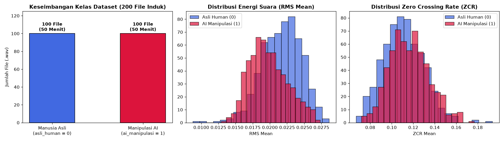
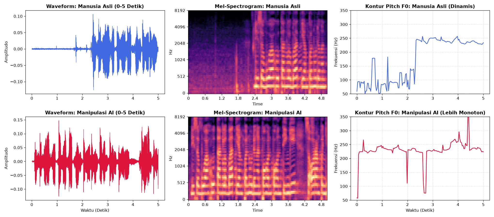

Tahap 2: Data Understanding#
Metodologi: CRISP-DM (Cross-Industry Standard Process for Data Mining)
Disusun Oleh: Kelompok 4 (Muhammad Ainul Fuady, Irwan Dwi Mukhlisin, Fikri Mutawakkil)
2.1 Sumber & Spesifikasi Dataset Audio#
Dataset yang digunakan bersumber dari repositori publik Kaggle: Speech Dataset of Human and AI-Generated Voices. Dataset ini berisi rekaman percakapan berbahasa Indonesia yang mencakup suara pembicara manusia asli serta rekaman sintetis hasil generasi berbagai model kecerdasan buatan.
Seluruh rekaman dipotong secara seragam menjadi 200 file WAV dengan spesifikasi teknis standar:
Parameter Teknis |
Nilai Spesifikasi |
Keterangan |
|---|---|---|
Format File |
|
Format audio lossless tanpa kompresi artefak MP3 |
Sampling Rate (\(f_s\)) |
|
Standar internasional pemrosesan suara bicara (wideband speech) |
Jumlah Saluran (Channels) |
|
Menghilangkan variasi spasial stereo yang tidak relevan |
Durasi per File Induk |
|
Total 480.000 titik sampel per file audio |
Jumlah File Kelas |
|
Label |
Jumlah File Kelas |
|
Label |
Total Durasi Kolektif |
100 Menit |
200 file \(\times\) 30 detik = 6.000 detik |
2.2 Inventarisasi & Validasi Integritas Audio#
Sebelum mengekstrak fitur, dilakukan validasi integritas terhadap seluruh 200 file audio untuk memastikan:
Keseimbangan Kelas (Class Balance): Rasio jumlah file antara kelas Manusia Asli dan AI Manipulasi tepat seimbang
50% : 50%.Ketiadaan Nilai Rusak (Zero Corrupt/NaN): Tidak ada file yang mengalami galat pembacaan (I/O error), mengandung nilai tak terdefinisi (
NaN/Inf), maupun nilai amplitudo yang melampaui batas clipping normal \([-1{,}0, +1{,}0]\).Ketiadaan Audio Hening (Zero Silence): Memastikan tidak ada file yang hening total (\(\text{Max Amplitude} < 10^{-4}\)).
Hasil pengujian integritas menunjukkan seluruh 200 file audio berstatus 100% valid dan bersih.


Fig. 1 Keseimbangan Kelas (200 File Induk) serta Distribusi Energi Suara (RMS Mean) dan Zero Crossing Rate (ZCR).#
2.3 Eksplorasi Sinyal Audio (Exploratory Data Analysis / EDA)#
Untuk memahami perbedaan fisik mendasar antara suara manusia biologis dan suara sintetis AI, dilakukan analisis komparatif pada 3 domain sinyal:
2.3.1 Domain Waktu (Time-Domain Analysis)#
Pada domain waktu, gelombang suara (waveform) merepresentasikan fluktuasi tekanan udara terhadap waktu:
Suara Manusia Asli: Memperlihatkan variasi amplitudo yang dinamis, intonasi emosi alami, serta jeda pernapasan (breathing pauses) yang teratur.
Suara Manipulasi AI: Cenderung memiliki amplifikasi yang sangat terkompresi secara konstan (over-normalized), di mana jeda hening antar-kata sering kali berupa keheningan mutlak (amplitudo mendekati 0 sempurna tanpa room tone alami).
2.3.2 Domain Frekuensi Spektral (Spectral Analysis)#
Melalui transformasi Fourier (Short-Time Fourier Transform / STFT), sinyal diubah ke dalam spektrogram frekuensi berbasis skala Mel (Mel-Spectrogram):
Pada suara manusia asli, sebaran energi frekuensi tinggi harmonik merambat secara gradual (natural decay).
Pada suara AI, sering ditemukan anomali frekuensi tinggi (high-frequency artifacts) yang disebabkan oleh keterbatasan algoritma upsampling pada neural vocoder.
2.3.3 Domain Biometrik Pita Suara (Pitch \(F_0\) Tracking)#
Menggunakan algoritma pelacakan frekuensi dasar YIN pada rentang vokal manusia (\(50 - 400\text{ Hz}\)):
Pitch Manusia Asli: Memiliki variasi mikro (micro-tremors / jitter) dan kontur intonasi yang fleksibel mengikuti konteks kalimat.
Pitch AI Manipulasi: Memperlihatkan kontur frekuensi dasar yang cenderung lebih kaku, datar, atau memiliki transisi nada yang berpindah secara diskrit tanpa modulasi otot pita suara biologis.


Fig. 2 Perbandingan Gelombang Waktu (Waveform), Mel-Spektrogram, dan Kontur Pitch (\(F_0\)) antara Manusia Asli (baris atas) dan Manipulasi AI (baris bawah).#